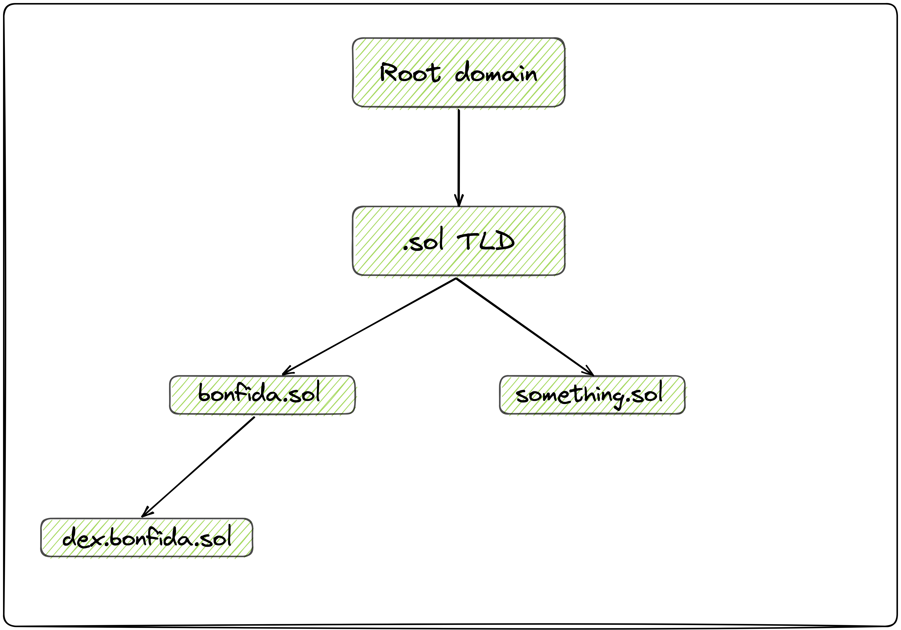
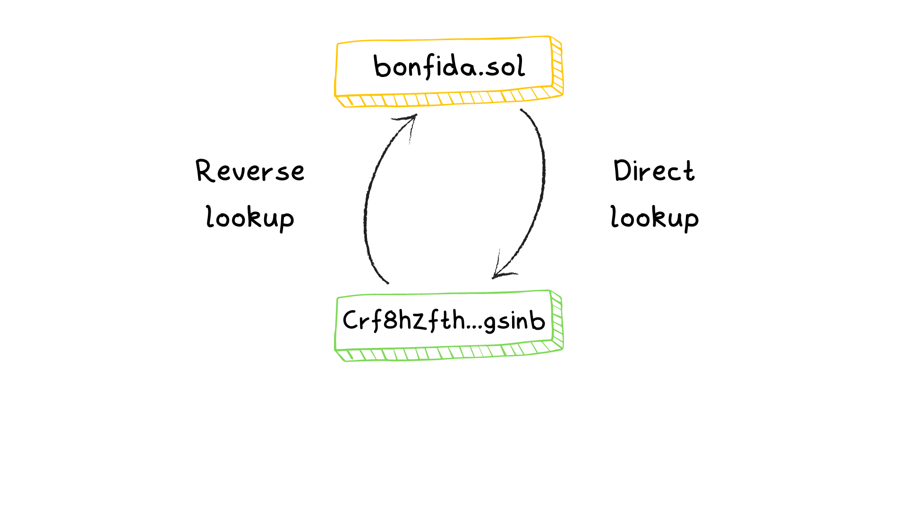
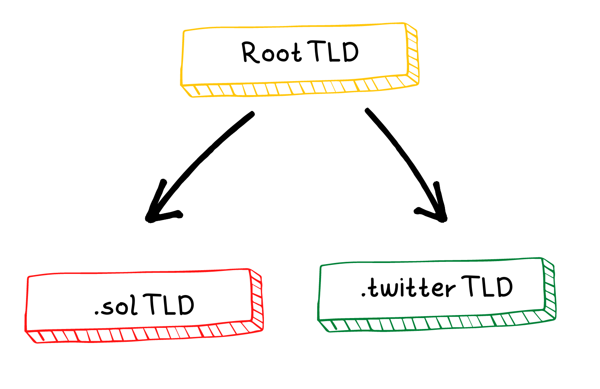
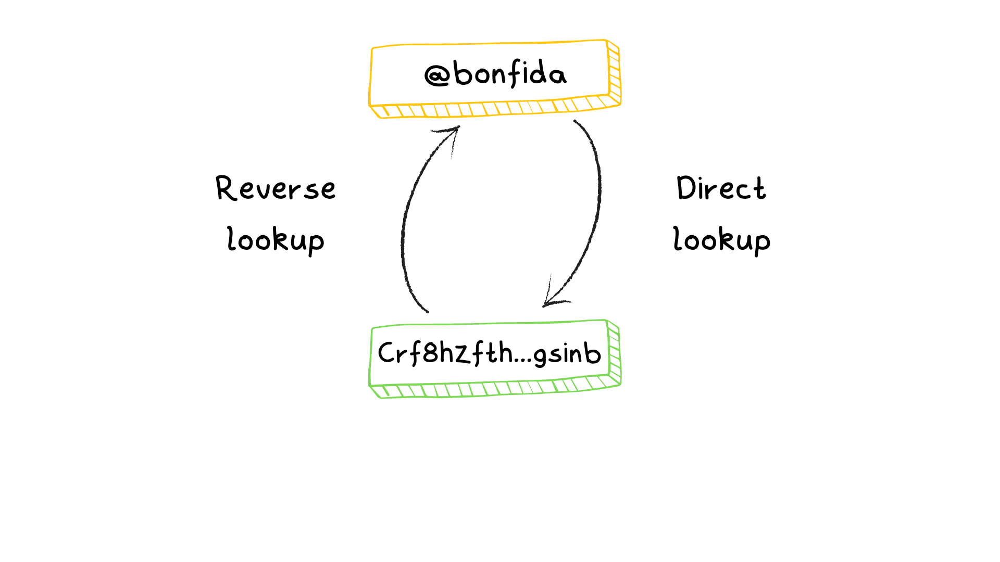

Introduction
Welcome to the Solana Name Service (SNS). SNS has a simple mission of providing a decentralized and yet affordable way to map domain names (represented as .sol) to on-chain data. Where on-chain data can be anything from a Solana (SOL) address to IPFS CID, images, text, and more. One of the clear benefits of the name service is a human-readable name that maps to a SOL address. Essentially, creating an identity for users in the metaverse. Why does this matter you may ask? Well, wallet address formats can be a barrier to entry, and therefore having an identifiable address can facilitate payments and its efficiency. Nonetheless, Solana domain names can have much broader applications than just payments. Most decentralized apps (dApps) have a single point of failure which is their centralized and censorable domain name. However, on-chain domain names cannot be censored or taken away! Thus a website hosted on IPFS (or Arweave) using a Solana domain name would be completely decentralized and very difficult to censor.
Twitter handles & .sol domain names
Both Twitter handles and .sol domain names are a part of SNS, yet are slightly different. A Twitter handle can only be claimed by the owner of the Twitter account. In order to guarantee this, the user needs to tweet the wallet address they want to associate with the account and then sign a transaction using the same wallet address. An oracle then verifies that the public key contained in the tweet matches with the signer. In practice, this means that Twitter names are already reserved. Twitter users just need to claim their public key by tweeting it. Still, this has privacy implications that require you to have an identifiable Twitter account. This is where .sol domain names are useful. The domain names serve the same purpose as Twitter handles except they do not require you to reveal any personal information or a Twitter account.
Deployment
The Solana Name Service program is deployed on Mainnet, Devnet and Testnet at the following address:
namesLPneVptA9Z5rqUDD9tMTWEJwofgaYwp8cawRkX
SNS SDK
The SNS SDK monorepo can be found here. It contains SDK for:
Installation
Rust SDK
cargo add sns-sdk
or
sns-sdk = "0.1.0"
JS Library
To install the JS library
npm i @bonfida/spl-name-service
or
yarn add @bonfida/spl-name-service
To install the React
React hooks
To install the React hooks library
npm i @bonfida/sns-react
or
yarn add @bonfida/sns-react
CLI
cargo install --git https://github.com/Bonfida/sns-sdk.git sns
Example
The following examples show how to resolve the domain bonfida.sol:
- With the JS SDK
const connection = new Connection(clusterApiUrl("mainnet-beta"));
const owner = await resolve(connection, "bonfida");
expect(owner.toBase58()).toBe("HKKp49qGWXd639QsuH7JiLijfVW5UtCVY4s1n2HANwEA");
- With the Rust SDK
#![allow(unused)] fn main() { let client = RpcClient::new(std::env::var("RPC_URL").unwrap()); let res = resolve_owner(&client, "bonfida").await.unwrap(); assert_eq!(res, pubkey!("HKKp49qGWXd639QsuH7JiLijfVW5UtCVY4s1n2HANwEA")); }
- With the CLI
$ sns resolve bonfida
+---------+----------------------------------------------+----------------------------------------------------------------------------------+
| Domain | Owner | Explorer |
+---------+----------------------------------------------+----------------------------------------------------------------------------------+
| bonfida | HKKp49qGWXd639QsuH7JiLijfVW5UtCVY4s1n2HANwEA | https://explorer.solana.com/address/HKKp49qGWXd639QsuH7JiLijfVW5UtCVY4s1n2HANwEA |
+---------+----------------------------------------------+----------------------------------------------------------------------------------+
- With the React SDK
import { useConnection, useWallet } from "@solana/wallet-adapter-react";
import { useDomainOwner, useDomainsForOwner } from "@bonfida/sns-react";
export const Example = () => {
const { connection } = useConnection();
const { publicKey, connected } = useWallet();
const { result } = useDomainOwner(connection, "bonfida");
// ...
};
Changelog
0.1.50: addPOINTrecord0.1.41: addgetAllRegisteredDomains0.1.40: fixperformReverseLookupBatch0.1.39: addRecordenumand records getter functions0.1.38: addgetFavoriteDomain,getDomainKeyandgetAllDomains- In version
0.1.26the signature ofNameRegistryState.retrievechanged, it is now returning an object of type{ registry: NameRegistryState, nftOwner: PublicKey | undefined }
FAQ
Where can I buy a domain?
You can buy a domain on the Solana Name Service website
How do I find a domain if I only know its public key?
If you only know the public key of a domain you can do a reverse look up to find the associated domain. For example:
import { performReverseLookup } from "@bonfida/spl-name-service";
// Public key of bonfida.sol
const domainKey = new PublicKey("Crf8hzfthWGbGbLTVCiqRqV5MVnbpHB1L9KQMd6gsinb");
const domainName = await performReverseLookup(connection, domainKey); // bonfida
How do I find the public key of a domain?
If you want to find the public key of a domain you need to derive it:
import {
getHashedName,
getNameAccountKey,
NameRegistryState,
} from "@bonfida/spl-name-service";
const domainName = "bonfida"; // Without the .sol
// Step 1
const hashedName = await getHashedName(domainName);
// Step 2
const domainKey = await getNameAccountKey(
hashedName,
undefined,
SOL_TLD_AUTHORITY
);
How can I find the content of a domain?
You can access the content of a domain by retrieving its registry:
const { registry } = await NameRegistryState.retrieve(connection, domainKey);
const { parentName, owner, class, data } = registry;
How do I find the twitter handle of a public key?
To find the twitter handle of a public key
import { getHandleAndRegistryKey } from "@bonfida/spl-name-service";
const pubkey = new PublicKey("FidaeBkZkvDqi1GXNEwB8uWmj9Ngx2HXSS5nyGRuVFcZ");
const [handle] = await getHandleAndRegistryKey(connection, pubkey);
How do I find the public key of a twitter handle?
To find the public key of a twitter handle
import { getTwitterRegistry } from "@bonfida/spl-name-service";
const handle = "bonfida";
const registry = await getTwitterRegistry(connection, handle);
How do I find all the subdomains of a domain?
You can find all the subdomains using the following RPC filter:
const filters = [
{
memcmp: {
offset: 32,
bytes: userAccount.toBase58(),
},
},
{
memcmp: {
offset: 0,
bytes: parent_key.toBase58(),
},
},
];
How do I find all the subdomains of a user?
You can find all the subdomains of a user by doing the following
- Retrieve all the domains of the user
- Iterate over the domains and retrieve the subdomains for each
Name Registry: Understanding Domains on Solana
Solana can be viewed as a key-value database, where everything, including domains, is uniquely identifiable by a public key. The data inside a domain account contains an object called the Name Registry. The Name Registry is made of a header and payload.
Name Registry Explained
Name Registry Header
The header contains three public keys that define the domain's properties:
Parent: Represents the parent domain in the hierarchy.Owner: Indicates the entity that has control over the domain.Class: A special key that enables advanced use-cases, such as third-party verification in a badge system.
Below is the structure of the header in Rust:
#![allow(unused)] fn main() { /// The layout of the remaining bytes in the account data are determined by the record `class` #[derive(Clone, Debug, BorshSerialize, BorshDeserialize, PartialEq)] pub struct NameRecordHeader { // Names are hierarchical. `parent_name` contains the account address of the parent // name, or `Pubkey::default()` if no parent exists. pub parent_name: Pubkey, // The owner of this name pub owner: Pubkey, // The class of data this account represents (DNS record, twitter handle, SPL Token name/symbol, etc) // // If `Pubkey::default()` the data is unspecified. pub class: Pubkey, } }
Data: Flexible Data Storage
The data section can hold arbitrary binary data. Its length is set during domain registration, and the domain owner can decide what to store in this part of the Name Registry.
In simple terms, the Name Registry data structure provides a way to organize and store information about a domain on Solana, including its relationships, ownership, and any additional data the owner wishes to include.
Wallet Guide
This is the step-by-step guide to help wallet providers integrate .sol domain names and Twitter handles as a way to use them to send and receive funds instead of a pubkey.
The guide lays out the process of integrating domains to both Solana and the other blockchains SNS has been bridged to. Specifically, it’ll aid you in understanding the nuanced aspects of resolving tokenized domains, those with record sections and subdomains.
The instructions are structured in a three-part layout:
7.1 Resolving domains: describes how to integrate domains on Solana
7.2 Resolving bridged domains: describes how to integrate domains on other chains
7.3 Resolving Twitter handles: describes how to integrate Twitter handles linked to a pubkey
Resolving domains
Below is the correct methodology to resolve .sol domain names. If you are a wallet or a service provider using SNS to send funds please make sure to follow these guidelines to avoid loss of funds.

-
Check if the domain name is tokenized
- Yes: The correct destination of funds is the token holder
- No: Go to step 2
-
Check the SOL record
- If the SOL record is set and the signature is valid, the public key specified in the record is the correct destination. If the signature is invalid go to step 3
- Else go to step 3
-
The correct destination of funds is the domain owner
A JS implementation would be as follow:
import { Connection, PublicKey } from "@solana/web3.js";
import { getSolRecord } from "./record";
import { getDomainKey } from "./utils";
import { NameRegistryState } from "./state";
import { sign } from "tweetnacl";
import { Record } from "./types/record";
/**
* This function can be used to verify the validity of a SOL record
* @param record The record data to verify
* @param signedRecord The signed data
* @param pubkey The public key of the signer
* @returns
*/
export const checkSolRecord = (
record: Uint8Array,
signedRecord: Uint8Array,
pubkey: PublicKey
) => {
return sign.detached.verify(record, signedRecord, pubkey.toBytes());
};
/**
* This function can be used to resolve a domain name to transfer funds
* @param connection The Solana RPC connection object
* @param domain The domain to resolve
* @returns
*/
export const resolve = async (connection: Connection, domain: string) => {
const { pubkey } = await getDomainKey(domain);
const { registry, nftOwner } = await NameRegistryState.retrieve(
connection,
pubkey
);
if (nftOwner) {
return nftOwner;
}
try {
const recordKey = await getDomainKey(Record.SOL + "." + domain, true);
const solRecord = await getSolRecord(connection, domain);
if (solRecord.data?.length !== 96) {
throw new Error("Invalid SOL record data");
}
const encoder = new TextEncoder();
const expectedBuffer = Buffer.concat([
solRecord.data.slice(0, 32),
recordKey.pubkey.toBuffer(),
]);
const expected = encoder.encode(expectedBuffer.toString("hex"));
const valid = checkSolRecord(
expected,
solRecord.data.slice(32),
registry.owner
);
if (!valid) {
throw new Error("Signature invalid");
}
return new PublicKey(solRecord.data.slice(0, 32));
} catch (err) {
console.log(err);
}
return registry.owner;
};
Not resolving domains properly might lead to loss of funds ⚠️
FAQ
- What happens if funds are sent to the
NameRegistryowner when the domain is tokenized?
As long as the user owns the tokenized domains (i.e the NFT) they will be able to withdraw from the PDA escrow that received the funds. However, if for some reason the user does not own the NFT they won't be able to withdraw the funds.
- Why is there a signature in the SOL record?
The SOL record data contains a 96-byte array that is the concatenation of a public key (32 bytes) and signature (64 bytes). The first 32 bytes represent the public key (pubkey) to which funds should be sent and the next 64 bytes are the signature of pubkey_as_bytes + record_key_as_bytes signed by the owner of the domain. If the signature is invalid funds must not be transferred to the SOL record address.
The signature is required to prevent funds being sent to a stale SOL record after a domain has been transferred or sold to a new owner.
Examples
This section provides examples to assist you in testing your implementation. However, they are not exhaustive, therefore, ensure to carry out comprehensive tests beyond these examples. Use them as guidelines and adapt them to suit your specific needs.
| domain | owner |
|---|---|
| wallet-guide-5.sol | Fxuoy3gFjfJALhwkRcuKjRdechcgffUApeYAfMWck6w8 |
| wallet-guide-4.sol | Hf4daCT4tC2Vy9RCe9q8avT68yAsNJ1dQe6xiQqyGuqZ |
| wallet-guide-3.sol | Fxuoy3gFjfJALhwkRcuKjRdechcgffUApeYAfMWck6w8 |
| wallet-guide-2.sol | 36Dn3RWhB8x4c83W6ebQ2C2eH9sh5bQX2nMdkP2cWaA4 |
| wallet-guide-1.sol | 36Dn3RWhB8x4c83W6ebQ2C2eH9sh5bQX2nMdkP2cWaA4 |
| wallet-guide-0.sol | Fxuoy3gFjfJALhwkRcuKjRdechcgffUApeYAfMWck6w8 |
| sub-0.wallet-guide-3.sol | Fxuoy3gFjfJALhwkRcuKjRdechcgffUApeYAfMWck6w8 |
| sub-1.wallet-guide-3.sol | Hf4daCT4tC2Vy9RCe9q8avT68yAsNJ1dQe6xiQqyGuqZ |
Resolving bridged domains
The Solana Name Service (SNS) going cross-chain means that it is expanding its functionality beyond the Solana ecosystem, enabling users to export their domain names to alternative blockchains using the Wormhole bridge. This move aims to increase the utility and adoption of SNS, while also fostering collaboration and interoperability between different blockchain networks. By allowing SNS domains to be resolved on supported chains like EVM-based chains, SNS becomes more accessible to a wider range of developers and users, promoting the growth of the Solana ecosystem and showcasing its capabilities beyond its native environment.
EVM Chains
The Solana Name Service has been bridged to the following EVM chains:
- BNB Testnet (deployed at
0x4d50e149bb3d8c889f4ccdfffba0ef8016168d92) - BNB Mainnet (deployed at
0xd1Ae42Ce34E6b7ab5B41dcc851424F3cF410BF16)
Solana domain names bridged on EVM chains can be resolved using the NPM package @bonfida/sns-warp-evm.
Installation
With Yarn:
yarn add @bonfida/sns-warp-evm
With NPM
npm i @bonfida/sns-warp-evm
Resolving a .sol domain
The following code can be used to resolve .sol domains
import { SupportedChains, SNS } from "@bonfida/sns-warp-evm";
// The domain name to resolve
const domain = "mock3.sol";
// The chain on which to resolve the domain
const targetChain = SupportedChains.BNBMainnet;
const sns = new SNS(SupportedChains.BNBMainnet);
const resolved = await sns.resolveName(domain);
console.log(resolved); // <- 0x1D719d2dB763f905b1924F46a5185e001Dd93786
Reverse look up
import { SupportedChains, SNS } from "@bonfida/sns-warp-evm";
import { namehash } from "@ethersproject/hash";
// The chain on which to perform the reverse lookup
const targetChain = SupportedChains.BNBMainnet;
const sns = new SNS(targetChain);
const nameHash = namehash("mock3.sol");
const resolved = await sns.resolveReverse(nameHash);
console.log(resolved); // <- mock3
Resolving Twitter handles
The Solana name service supports the registration of Twitter handles, allowing users to connect their Twitter profile to their wallet.
Direct look up
To find the Twitter handle associated to a public key
import { getHandleAndRegistryKey } from "@bonfida/spl-name-service";
const pubkey = new PublicKey("FidaeBkZkvDqi1GXNEwB8uWmj9Ngx2HXSS5nyGRuVFcZ");
const [handle] = await getHandleAndRegistryKey(connection, pubkey);
Reverse look up
To find the public key associated to a Twitter handle
import { getTwitterRegistry } from "@bonfida/spl-name-service";
const handle = "bonfida";
const registry = await getTwitterRegistry(connection, handle);
const owner = registry.owner.toBase58();
Domain names
This following sections provide information on the following:
- The domain names TLD
- Direct look up
- Reverse look up
- Subdomain look up
- Get all domains of a user
- Get all domains
- Records
- Transfer domains
- Edit domain content
- Favorite domain
- React hooks
- Domain name tokenization
- Domain registration
- Media kit
- Deleting domains
- Creating subdomains
- Examples
TLD

In Solana, the hierarchy of domain names and the TLD system is organized similarly to the traditional internet domain structure. The top of the hierarchy is the Root domain, which holds the Top Level Domains (TLDs) like .sol.
Under the Root domain, you have the TLDs, such as .sol. All the domain names registered with the .sol extension are considered children (or subdomains) of the .sol TLD. For example, bonfida.sol is a child of the .sol TLD.
Further down the hierarchy, you can have subdomains of the registered domain names. For instance, dex.bonfida.sol is a child of bonfida.sol.
In simple terms, the hierarchy of Solana domain names starts with the Root domain, followed by TLDs (e.g., .sol), then the registered domain names (e.g., bonfida.sol), and finally any subdomains (e.g., dex.bonfida.sol). This hierarchical structure allows for an organized way to manage and identify domain names on the Solana network.
TLD list
- Root TLD:
ZoAhWEqTVqHVqupYmEanDobY7dee5YKbQox9BNASZzU - .sol TLD:
58PwtjSDuFHuUkYjH9BYnnQKHfwo9reZhC2zMJv9JPkx
Web resolution
Web resolvers
While SNS offers numerous benefits, its separation from the traditional Domain Name System (DNS) can present challenges for adoption and accessibility. To address these challenges, we are building the necessary infrastructure to bridge the gap between SNS and DNS, making it easier for users to interact with SNS through familiar methods.
Below are three such methods for resolving .sol domain names:
- Natively in the Brave browser
- Through a proxy service called sol-domain.org
Brave browser
The Brave browser supports native resolution of .sol domain names, allowing users to access Solana Name Service domains directly from the URL bar. To resolve an SNS domain in the Brave browser, simply type the domain followed by .sol in the URL bar, and press Enter. For instance, to access the Pyth network website, you would enter pyth.sol in the URL bar.
Resolution via sol-domain.org Proxy Service
The sol-domain.org service is a proxy that enables users to access SNS domains via the traditional DNS system. To resolve a .sol domain using sol-domain.org, append the domain name to the beginning of the sol-domain.org URL. For example, to resolve the pyth.sol domain, you would enter https://pyth.sol-domain.org in the URL bar of your browser.
Resolving .sol domain names in practice
The process for resolving .sol domain names follows a defined set of rules based on different types of records: URL, IPFS, Arweave, and Shadow Drive. The resolution process checks for these records in the specified order until it finds a valid record.
Step-by-step process
Step 1: URL Record
First, check if the URL record exists and is valid. If so, this is the website to resolve to. The URL record typically contains the HTTP or HTTPS link to the website hosted on the domain.
Step 2: IPFS Record
If there is no valid URL record, proceed to check for an IPFS record.
If the IPFS record exists and is valid, the user should be redirected to the corresponding IPFS content via an IPFS gateway. An IPFS gateway acts as a bridge between the traditional web and the IPFS network, allowing browsers that don't natively support IPFS to access IPFS content.
Step 3: Arweave Record
If neither a URL nor an IPFS record is found or valid, check for an Arweave record.
If the Arweave record exists and is valid, the user should be redirected to the Arweave content via an Arweave gateway. Similar to the IPFS gateway, an Arweave gateway allows users to access Arweave-hosted content through traditional web browsers.
Step 4: Shadow Drive Record
Lastly, if no URL, IPFS, or Arweave records are found or valid, check for a Shadow Drive record.
If the Shadow Drive record exists and is valid, the user should be redirected to the content via a Shadow Drive gateway. Like IPFS and Arweave gateways, a Shadow Drive gateway provides access to Shadow Drive-hosted content for traditional web browsers.
Direct look up

In order to get the information of a domain name you need to:
- Get the domain name public key
- Retrieve the account info
import { getDomainKey, NameRegistryState } from "@bonfida/spl-name-service";
const domainName = "bonfida"; // With or without the .sol at the end
// Step 1
const { pubkey } = await getDomainKey(domainName);
// Step 2
// The registry object contains all the info about the domain name
// The NFT owner is of type PublicKey | undefined
const { registry, nftOwner } = await NameRegistryState.retrieve(
connection,
pubkey
);
// Subdomain derivation
const subDomain = "dex.bonfida"; // With or without the .sol at the end
const { pubkey: subKey } = await getDomainKey(subDomain);
// Record derivation (e.g IPFS record)
const record = "IPFS.bonfida"; // With or without the .sol at the end
const { pubkey: recordKey } = await getDomainKey(record, true);
The retrieve method returns an object made of two fields:
registryis of typeNameRegistryStatenftOwneris of typePublicKey | undefined- When
nftOwneris of typePublicKeyit means that the domain is tokenized and the current NFT holder isnftOwner. When a domain is tokenizedregistry.owneris an escrow account that is program owner. Funds should be sent tonftOwner - When
nftOwneris of typeundefinedit means that the domain is not tokenized and funds should be sent toregistry.owner
- When
Note:
NameRegistryState.retrieveBatchcan be used to retrieve multiple name registries at once.
Reverse look up
If you know the public key of a domain name registry and want to get the human readable name, you need to perform a reverse lookup.
The following code can be used to resolve the domain name from its public key:
import { performReverseLookup } from "@bonfida/spl-name-service";
// Public key of bonfida.sol
const domainKey = new PublicKey("Crf8hzfthWGbGbLTVCiqRqV5MVnbpHB1L9KQMd6gsinb");
const domainName = await performReverseLookup(connection, domainKey); // bonfida
Subdomain look up
In order to resolve all subdomains of a parent domain:
import { findSubdomains } from "@bonfida/spl-name-service";
// Public key of bonfida.sol
const parentKey = new PublicKey("Crf8hzfthWGbGbLTVCiqRqV5MVnbpHB1L9KQMd6gsinb");
// Assuming that bonfida.sol has the following subdomains
// - sub_1.bonfida.sol
// - sub_2.bonfida.sol
const subdomains: string[] = await findSubdomains(connection, parentKey); // [sub_1, sub_2]
Get all domains of a user
You can retrieve all the domain names of a user with the following MemcmpFilter
const filters = [
{
memcmp: {
offset: 32,
bytes: user.toBase58(),
},
},
{
memcmp: {
offset: 0,
bytes: SOL_TLD_AUTHORITY.toBase58(),
},
},
];
If you are using @bonfida/spl-name-service you can use the following code:
import { getAllDomains } from "@bonfida/spl-name-service";
// ...
const domains = await getAllDomains(connection, user);
Get all domain names
You can retrieve all the registered domain names using a getProgramAccounts request with the following RPC filter
const filters = [
{
memcmp: {
offset: 0,
bytes: SOL_TLD_AUTHORITY.toBase58(),
},
},
];
If you are using @bonfida/spl-name-service you can use the following code:
import { getAllRegisteredDomains } from "@bonfida/spl-name-service";
// ...
const registeredDomains = await getAllRegisteredDomains(connection);
To avoid enormous payload response, getAllRegisteredDomains slices the data to only return the owner of the domain (i.e dataSlice = { offset: 32, length: 32 })
/**
* This function can be used to retrieve all the registered `.sol` domains.
* The account data is sliced to avoid enormous payload and only the owner is returned
* @param connection The Solana RPC connection object
* @returns
*/
export const getAllRegisteredDomains = async (connection: Connection) => {
const filters = [
{
memcmp: {
offset: 0,
bytes: ROOT_DOMAIN_ACCOUNT.toBase58(),
},
},
];
const dataSlice = { offset: 32, length: 32 };
const accounts = await connection.getProgramAccounts(NAME_PROGRAM_ID, {
dataSlice,
filters,
});
return accounts;
};
Records
In addition to typical DNS records (A, AAAA, TXT, MX, etc.), the Solana Name Service introduces brand new web3-specific types. The following table will be updated as new protocols are integrated.
| Name | Value |
|---|---|
| IPFS | An IPFS CID |
| ARWV | An Arweave address |
| SOL | A concatenation of a public key and a signature |
| ETH | An ETH public key |
| BTC | A BTC public key |
| LTC | An LTC public key |
| DOGE | A DOGE public key |
| An email address | |
| url | A website URL |
| discord | A discord username |
| github | A github username |
| A reddit username | |
| A twitter username | |
| telegram | A telegram username |
| pic | A profile picture |
| SHDW | A Shadow drive address |
| POINT | A Point network record |
| BSC | A BSC public key |
| INJ | A Cosmos (Injective) public key |
| backpack | A Backpack username |
Record enum
The following enum is exported from @bonfida/spl-name-service
export enum Record {
IPFS = "IPFS",
ARWV = "ARWV",
SOL = "SOL",
ETH = "ETH",
BTC = "BTC",
LTC = "LTC",
DOGE = "DOGE",
Email = "email",
Url = "url",
Discord = "discord",
Github = "github",
Reddit = "reddit",
Twitter = "twitter",
Telegram = "telegram",
Pic = "pic",
SHDW = "SHDW",
POINT = "POINT",
BSC = "BSC",
Injective = "INJ",
Backpack = "backpack",
}
Record derivation
Record keys can be derived with the getDomainKey function and the record flag set to true
const record = Record.IPFS + "." + "bonfida"; // With or without the .sol at the end
const { pubkey: recordKey } = await getDomainKey(record, true);
If the
recordflag is set tofalse, thegetDomainKeyfunction will derive the key of the subdomain
Resolving records
The following resolving functions are exported:
getIpfsRecord: This function can be used to retrieve the IPFS record of a domain namegetArweaveRecord: This function can be used to retrieve the Arweave record of a domain namegetSolRecord: This function can be used to retrieve the SOL record of a domain namegetEthRecord: This function can be used to retrieve the ETH record of a domain namegetBtcRecord: This function can be used to retrieve the BTC record of a domain namegetLtcRecord: This function can be used to retrieve the LTC record of a domain namegetDogeRecord: This function can be used to retrieve the DOGE record of a domain namegetEmailRecord: This function can be used to retrieve the email record of a domain namegetUrlRecord: This function can be used to retrieve the URL record of a domain namegetDiscordRecord: This function can be used to retrieve the Discord record of a domain namegetGithubRecord: This function can be used to retrieve the Github record of a domain namegetRedditRecord: This function can be used to retrieve the Reddit record of a domain namegetTwitterRecord: This function can be used to retrieve the Twitter record of a domain namegetTelegramRecord: This function can be used to retrieve the Telegram record of a domain namegetShdwRecord: This function can be used to retrieve the SHDW record of a domain namegetBscRecord: This function can be used to retrieve the BSC record of a domain namegetInjectiveRecord: This function can be used to retrieve the Cosmos Injective record of a domain namegetBackpackRecord: This function can be used to retrieve the Backpack record of a domain name
All functions have the following signature
(connection: Connection, domain: string) => Promise<NameRegistryState>
A more generic resolving function getRecord is also exported with the following signature
(connection: Connection, domain: string, record: Record) => Promise<NameRegistryState>
The SOL record
The SOL record can be used to receive funds to a different address than the one owning the domain. This allows people to hold the domain on a cold wallet while being able to receive funds on a hot wallet.
The SOL record data contains a 96-byte array that is the concatenation of a public key (32 bytes) and signature (64 bytes). The first 32 bytes represent the public key (pubkey) to which funds should be sent and the next 64 bytes are the signature of pubkey_as_bytes + record_key_as_bytes by the owner of the domain. If the signature is invalid funds must not be transferred.
The signature is required to prevent funds being sent to a stale SOL record after a domain has been transferred or sold.
Gateway
The following records can be resolved in browser using https://sol-domain.org:
UrlIPFSARWVSHDW
The implementation of this resolver can be found on Github
For example https://bonfida.sol-domain.org
Difference between records and subdomains
In practice, let us consider the name foo.sol . If we want to find the domain's A record, containing an associated IPv4 address, then we can find it by querying \1A.foo.sol, with \1 the character of code value 1. The specification makes use of this prefix in order to differentiate between actual domains and records, which means that it is still possible to use the A.foo.sol subdomain with no collision.
In addition to this, the special \1.foo.sol is reserved to hold the list of all currently initialized records for a given subdomain
Note:
\0and\1are convenient notations for:
\0 = \x00.\1 = \x01.
Editing records
Below is a NodeJS example of how to create and edit a record
import {
Connection,
TransactionInstruction,
Keypair,
clusterApiUrl,
} from "@solana/web3.js";
import {
Record,
getDomainKey,
createNameRegistry,
NameRegistryState,
updateInstruction,
NAME_PROGRAM_ID,
Numberu32,
} from "@bonfida/spl-name-service";
import { signAndSendInstructions } from "@bonfida/utils";
const connection = new Connection(clusterApiUrl("mainnet-beta"), "processed");
const wallet = Keypair.fromSecretKey(...);
// bonfida.sol
const domain = "bonfida"; // With or without the .sol at the end
// The IPFS record of bonfida.sol
const record = Record.IPFS;
const update = async () => {
const ixs: TransactionInstruction[] = [];
const { pubkey: domainKey } = await getDomainKey(domain);
const { pubkey: recordKey } = await getDomainKey(record + "." + domain, true);
const recordAccInfo = await connection.getAccountInfo(recordKey);
if (!recordAccInfo?.data) {
// The record does not exist so create it first
const space = 2_000;
const lamports = await connection.getMinimumBalanceForRentExemption(
space + NameRegistryState.HEADER_LEN
);
const ix = await createNameRegistry(
connection,
Buffer.from([1]).toString() + record,
space,
wallet.publicKey,
wallet.publicKey,
lamports,
undefined,
domainKey
);
ixs.push(ix);
}
const ix = updateInstruction(
NAME_PROGRAM_ID,
recordKey,
new Numberu32(0),
Buffer.from("Some IPFS CID"),
wallet.publicKey
);
ixs.push(ix);
const tx = await signAndSendInstructions(connection, [], wallet, ixs);
console.log(`Updated record ${tx}`);
};
update();
Deleting a record
Records can be deleted using the deleteInstruction function, below is a NodeJS example
import { Connection, Keypair, clusterApiUrl } from "@solana/web3.js";
import {
Record,
getDomainKey,
NAME_PROGRAM_ID,
deleteInstruction,
} from "@bonfida/spl-name-service";
import { signAndSendInstructions } from "@bonfida/utils";
const domain = "bonfida.sol"; // With or without .sol
const record = Record.IPFS;
const connection = new Connection(clusterApiUrl("mainnet-beta"), "processed");
const wallet = Keypair.fromSecretKey(...) // Your wallet owning the domain
const deleteRecord = async () => {
const { pubkey: recordKey } = await getDomainKey(record + "." + domain, true);
const ix = deleteInstruction(
NAME_PROGRAM_ID,
recordKey,
wallet.publicKey,
wallet.publicKey
);
const tx = await signAndSendInstructions(connection, [], wallet, [ix]);
console.log(`Deleted record ${tx}`);
};
deleteRecord();
Edit domain content
To write data in a domain registry you can use the following code:
import {
updateNameRegistryData,
ROOT_DOMAIN_ACCOUNT,
} from "@bonfida/spl-name-service";
const data = Buffer.from("Hello, world!");
// The offset to which the data should be written into the registry, usually 0
const offset = 0;
const ix = await updateNameRegistryData(
connection,
name,
offset,
data,
undefined,
ROOT_DOMAIN_ACCOUNT
);
// sign and send instruction
If the data is too large to fit in a single transaction, you will have to update the domain in several transaction by slicing the buffer and increasing the offset accordingly.
Transfer domain
Domain names can be transferred using the transferNameOwnership instruction:
import {
transferNameOwnership,
NameRegistryState,
SOL_TLD_AUTHORITY,
} from "@bonfida/spl-name-service";
// ..
// Domain name to transfer
const domain = "bonfida";
// New owner of the domain
const newOwner = new PublicKey("...");
const ix = await transferNameOwnership(
connection,
domain,
newOwner,
undefined,
SOL_TLD_AUTHORITY
);
// sign and send instruction
Favorite domain
Users have the possibility to select a domain name as their favorite one. If you are a developper and want to integrate SNS to your DApp it's recommended to always use the favorite domain name to replace the user's public key.
The favorite domain name can be retrieved with the following code
import { getFavoriteDomain } from "@bonfida/spl-name-service";
// ...
const { domain, reverse } = await getFavoriteDomain(connection, user);
getFavoriteDomain returns the following:
domain: The public key of the domain namereverse: The reverse look up of the account
For instance for FidaeBkZkvDqi1GXNEwB8uWmj9Ngx2HXSS5nyGRuVFcZ:
domain = Crf8hzfthWGbGbLTVCiqRqV5MVnbpHB1L9KQMd6gsinbreverse = bonfida
React hooks
The list below show how to implement your own React hooks using vanilla React. For production, it's recommended to use the React hooks library.
useDomains
This hook can be used to resolve several domain names:
import { getDomainKey, NameRegistryState } from "@bonfida/spl-name-service";
import { useEffect, useState, useRef } from "react";
type Result = (NameRegistryState | undefined)[] | undefined;
/**
* This hook can be used to resolve several domain names
* @param domains List of domains to resolve e.g ["bonfida", "serum"]
* @returns
*/
export const useDomains = (domains: string[]) => {
const { connection } = useConnection();
const [result, setResult] = useState<Result>(undefined);
const mounted = useRef(true);
useEffect(() => {
const fn = async () => {
const keys = await Promise.all(domains.map((e) => getDomainKey(e)));
const registries = await NameRegistryState.retrieveBatch(
connection,
keys.map((e) => e.pubkey)
);
if (mounted.current) {
setResult(registries);
}
return () => (mounted.current = false);
};
fn().catch(console.error);
}, [...domains]);
return result;
};
useDomainRecords
This hook can be used to retrieve all the records of a domain:
type Result = (string | undefined)[] | undefined;
/**
* This hook can be used to retrieve all the records of a domain
* @param domains Domains to resolve records for e.g "bonfida"
* @returns
*/
export const useRecords = (domain: string) => {
const { connection } = useConnection();
const [result, setResult] = useState<Result>(undefined);
const mounted = useRef(true);
useEffect(() => {
const fn = async () => {
const recordsKeys = Object.keys(Record).map((e) => Record[e]);
const keys = await Promise.all(
recordsKeys.map((e) => getDomainKey(e + "." + domain, true))
);
const registries = await NameRegistryState.retrieveBatch(
connection,
keys.map((e) => e.pubkey)
);
// Remove trailling 0s
const records = registries.map((e) => {
if (e?.data) {
const idx = e.data?.indexOf(0x00);
e.data = e.data?.slice(0, idx);
return e.data.toString();
}
// Record is not defined
return undefined;
});
if (mounted.current) {
setResult(records);
}
return () => (mounted.current = false);
};
fn().catch(console.error);
}, [domain]);
return result;
};
useDomainsForUser
This hook can be used to retrieve all the domains owned by a user:
interface Result {
pubkey: PublicKey;
registry: NameRegistryState;
reverse: string;
}
/**
* This hook can be used to retrieve all the domains of a user
* @param user The user to search domains for
* @returns
*/
export const useDomainsForUser = (user: PublicKey) => {
const { connection } = useConnection();
const [result, setResult] = useState<Result[] | undefined>(undefined);
const mounted = useRef(true);
useEffect(() => {
const fn = async () => {
const domains = await getAllDomains(connection, user);
const registries = await NameRegistryState.retrieveBatch(connection, [
...domains,
]);
const reverses = await performReverseLookupBatch(connection, [
...domains,
]);
const _result: Result[] = [];
for (let i = 0; i < domains.length; i++) {
_result.push({
pubkey: domains[i],
registry: registries[i]!,
reverse: reverses[i]!,
});
}
if (mounted.current) {
setResult(_result);
}
return () => (mounted.current = false);
};
fn().catch(console.error);
}, [user.toBase58()]);
return result;
};
useFavoriteDomain
Favorite domains allow users who own several domains to select one of them as their default identity.
This favorite domain should be used by default by dApps.
import { useEffect, useRef, useState } from "react";
import { useConnection } from "@solana/wallet-adapter-react";
import { PublicKey } from "@solana/web3.js";
import { performReverseLookup } from "@bonfida/spl-name-service";
import { FavouriteDomain, NAME_OFFERS_ID } from "@bonfida/name-offers";
type Result = string | undefined;
export const useFavoriteDomain = (user: PublicKey) => {
const { connection } = useConnection();
const [result, setResult] = useState<Result>(undefined);
const mounted = useRef(true);
useEffect(() => {
const fn = async () => {
const [favKey] = await FavouriteDomain.getKey(NAME_OFFERS_ID, user);
const favourite = await FavouriteDomain.retrieve(connection, favKey);
const reverse = await performReverseLookup(
connection,
favourite.nameAccount
);
if (mounted.current) {
setResult(reverse);
}
return () => (mounted.current = false);
};
fn().catch(console.error);
}, [user.toBase58()]);
return result;
};
useProfilePic
Users can set a profile picture using the pic record of their favorite domain name. This record holds the URI to their profile picture.
import { useEffect, useRef, useState } from "react";
import { useConnection } from "@solana/wallet-adapter-react";
import { PublicKey } from "@solana/web3.js";
import { getDomainKey, NameRegistryState } from "@bonfida/spl-name-service";
export const useProfilePic = (user: PublicKey) => {
const { connection } = useConnection();
const favorite = useFavoriteDomain(user);
const [result, setResult] = useState<Result>(undefined);
const mounted = useRef(true);
useEffect(() => {
const fn = async () => {
if (!favorite) {
return setResult(undefined);
}
const registry = await getPicRecord(connection, favorite.toBase58());
if (!registry.data) {
return setResult(undefined);
}
if (mounted.current) {
setResult(registry.data.toString("utf-8"));
}
return () => (mounted.current = false);
};
fn().catch(console.error);
}, [user.toBase58(), favorite]);
return result;
};
Tokenization
Domain names are not SPL tokens, however, they can be tokenized in NFTs that follow the Metaplex standard. It's only recommended to tokenize your domain if you want to resell your domain on an NFT market place like Magic Eden or Hyperspace.
The smart contract handling the tokenization of domain names can be found here: Name tokenizer
JS example
To retrieve all the tokenized domain names
import { retrieveNfts } from "@bonfida/spl-name-service";
// nfts is of type PublicKey[] and contains all the mints of the tokenized domain names
const nfts = await retrieveNfts(connection);
To retrieve the owner of the NFT that represent a tokenized domain name
import { retrieveNftOwner } from "@bonfida/spl-name-service";
const owner = await retrieveNftOwner(connection, nameKey);
Registration
Registration instructions can be created either via SDK or API, both methods are equivalent. To register a domain you will have to specify the following:
- Domain names
- Space (between 1kb and 10kb)
- The public key of the buyer
SDK
Unregistered domains can be registered using the SDK @bonfida/spl-name-service with the following instructions:
import { registerDomainName } from "@bonfida/spl-name-service";
const name = "bonfida"; // We want to register bonfida.sol
const space = 1 * 1_000; // We want a 1kB sized domain (max 10kB)
const buyer = new PublicKey("..."); // Publickey of the buyer
const buyerTokenAccount = new PublicKey("..."); // Publickey of the token account of the buyer (USDC)
const [, ix] = await registerDomainName(name, space, buyer, buyerTokenAccount);
// sign and send the instruction
API
Registration instructions can also be created via API (equivalent to using the SDK):
POST https://naming-api.bonfida.com/registrar/new-domain
With the following request body
{
"domain": "domain_to_register",
"pubkey": "pubkey_of_the_user",
"space": "domain_space", // Between 1_000 and 10_000
"language": "0"
}
Response:
{
"success": true,
"data": {
"keys": [
{
"pubkey": "SysvarRent111111111111111111111111111111111",
"isSigner": false,
"isWritable": false
},
// ...
{
"pubkey": "62pexKUPWncYECF7DMtENjKbwZnrJoMpvDkrrtceC8Ee",
"isSigner": false,
"isWritable": false
}
],
"programId": "jCebN34bUfdeUYJT13J1yG16XWQpt5PDx6Mse9GUqhR",
"data": [
9,
// ...
0
]
}
}
More details about direct registration can be found here
Media kit
Follow these guidelines when representing domain names on your website.
Domains names can be represented in two ways: inline and card.
Below are two examples of the inline and card representations.
- Inline

- Card

Rare domains
Rare domains are domains with 4 or less characters. These domains must be represented with the following gradient.
Gradient:

Card representation

Inline representation

Emoji domains
Emoji domains are domains that contain an emoji. These domains must be represented with the following gradient.

Card representation

Inline representation
Regular domains
Regular domains are domains that have 5 or more characters and do not contain an emoji. These domains must be represented with the following gradient.

Card representation

Inline representation

Deleting a domain
🚨 Deleting a domain is irreversible
🚨 Deleting a domain will make you loose ownership of the subdomains and records related to the domain
🚨 Deleting domain names is not recommended
Domain names can be deleted using the deleteInstruction, below is a NodeJS example:
import { Connection, Keypair, clusterApiUrl } from "@solana/web3.js";
import {
getDomainKey,
NAME_PROGRAM_ID,
deleteInstruction,
} from "@bonfida/spl-name-service";
import { signAndSendInstructions } from "@bonfida/utils";
// bonfida.sol
const domain = "bonfida.sol"; // With or without .sol
const connection = new Connection(clusterApiUrl("mainnet-beta"), "processed");
const wallet = Keypair.fromSecretKey(...);
const deleteDomain = async () => {
const { pubkey } = await getDomainKey(domain);
const ix = deleteInstruction(
NAME_PROGRAM_ID,
pubkey,
wallet.publicKey,
wallet.publicKey
);
const tx = await signAndSendInstructions(connection, [], wallet, [ix]);
console.log(`Deleted domain ${tx}`);
};
deleteDomain();
Deleting subdomains
Subdomains can be deleted using the deleteInstruction, below is a NodeJS example:
import { Connection, Keypair, clusterApiUrl } from "@solana/web3.js";
import {
getDomainKey,
NAME_PROGRAM_ID,
deleteInstruction,
} from "@bonfida/spl-name-service";
import { signAndSendInstructions } from "@bonfida/utils";
// dex.bonfida.sol
const domain = "dex.bonfida.sol"; // With or without .sol
const connection = new Connection(clusterApiUrl("mainnet-beta"), "processed");
const wallet = Keypair.fromSecretKey(...);
const deleteSubDomain = async () => {
const { pubkey } = await getDomainKey(domain);
const ix = deleteInstruction(
NAME_PROGRAM_ID,
pubkey,
wallet.publicKey,
wallet.publicKey
);
const tx = await signAndSendInstructions(connection, [], wallet, [ix]);
console.log(`Deleted subdomain ${tx}`);
};
deleteSubDomain();
Creating a subdomain
This code snippet creates a subdomain and its reverse lookup account:
import {
createNameRegistry,
getDomainKey,
NameRegistryState,
createReverseName,
} from "@bonfida/spl-name-service";
const ixs: TransactionInstruction[] = [];
const subdomain = "amazing-sub.bonfida.sol";
const { parent, pubkey } = await getDomainKey(subdomain);
// Space allocated to the subdomains
// In this example 2kb but can be more
const space = 2_000;
const lamports = await connection.getMinimumBalanceForRentExemption(
space + NameRegistryState.HEADER_LEN
);
const ix_create = await createNameRegistry(
connection,
"\0".concat("amazing-sub"),
space, // Hardcode space to 2kB
owner,
owner,
lamports,
undefined,
parent
);
ixs.push(ix_create);
// Create the reverse name
const [, ix_reverse] = await createReverseName(
pubkey,
"\0".concat("amazing-sub"),
owner,
parent,
owner
);
ixs.push(...ix_reverse);
// Sign an send the tx
From 0.2.2 this logic is exported via the createSubdomain function
Examples
Below is a list of examples that can be used to test your code:
Key derivations
The following examples can be used to test your derivations:
Domain name
solana.sol:- Public key:
9TdKztwu2cS3JConXYEwqscjuCixgQqFq1pAiPQEbkSy(Explorer link) - Reverse key:
AceeTYYPKzfmEd9uht5cB9ATMFEjJPcG1VLCRvgiV4fy(Explorer link)
- Public key:
bonfida.sol:- Public key:
Crf8hzfthWGbGbLTVCiqRqV5MVnbpHB1L9KQMd6gsinb(Explorer link) - Reverse key:
DqgmWxe2PPrfy45Ja3UPyFGwcbRzkRuwXt3NyxjX8krg(Explorer link)
- Public key:
01.sol:- Public key:
8nZ7dyd6fFSiHTV5qUCNz6kMLzVcgKgHVsDvE8AvPyq9(Explorer link) - Reverse key:
GFG4HcxU5URRfBxFLV9xvmJo6mdHCunEm2DRHc3aNtfL(Explorer link)
- Public key:
Subdomain
-
dex.solana.sol:- Public key:
F1A1iznr16YfnWAnLXLKvS3aStm4VHwkheMD786KW8Ca(Explorer link) - Reverse key:
9gT93HfjZVHT8xHrJvzV7eRFs5bnXhPAsEpxvgvCsDaw(Explorer link)
- Public key:
-
dex.bonfida.sol:- Public key:
HoFfFXqFHAC8RP3duuQNzag1ieUwJRBv1HtRNiWFq4Qu(Explorer link) - Reverse key:
6tAdEpjsrzHuRqJW3XMXEV7DFyCWW4giW6mW4bgvhcYV(Explorer link)
- Public key:
Record
-
solana.solIPFS record:- Public key:
GvncrrXMGsBMtwg2uh8FShUqLS4GLtYrmBeCdX5PEbPR(Explorer link)
- Public key:
-
bonfida.solURL record:- Public key:
CvhvqcxBbA4UdWuJFDMuuC4XbpCrAd9gidpW5wxEsjg5(Explorer link)
- Public key:
💡 Difference between records and subdomains
In practice, let us consider the name foo.sol . If we want to find the domain's A record, containing an associated IPv4 address, then we can find it by querying \1A.foo.sol, with \1 the character of code value 1. The specification makes use of this prefix in order to differentiate between actual domains and records, which means that it is still possible to use the A.foo.sol subdomain with no collision.
In addition to this, the special \1.foo.sol is reserved to hold the list of all currently initialized records for a given subdomain
Note:
\0and\1are convenient notations for:
\0 = \x00.\1 = \x01.
This following sections provide information on the following:
- The twitter TLD
- How to register a twitter handle
- How to perform a direct look up
- How to perform a reverse look up
TLD
The Twitter handle TLD is
export const TWITTER_ROOT_PARENT_REGISTRY_KEY = new PublicKey(
"4YcexoW3r78zz16J2aqmukBLRwGq6rAvWzJpkYAXqebv"
);
The .twitter TLD is owned by the root TLD and all twitter handles are subdomains of the .twitter TLD

Twitter handle registration
Twitter handles can be registered here and a detailed guide can be found on the Community Help Center
Direct look up

To find the Twitter handle associated to a public key
import { getHandleAndRegistryKey } from "@bonfida/spl-name-service";
const pubkey = new PublicKey("FidaeBkZkvDqi1GXNEwB8uWmj9Ngx2HXSS5nyGRuVFcZ");
const [handle] = await getHandleAndRegistryKey(connection, pubkey);
Reverse look up
To find the public key associated to a Twitter handle
import { getTwitterRegistry } from "@bonfida/spl-name-service";
const handle = "bonfida";
const registry = await getTwitterRegistry(connection, handle);
const owner = registry.owner.toBase58();
SNS API
⚠️ This API is not meant to replace the blockchain as the source of truth. The blockchain should always be considered as the only source of truth. This API is only a snapshot of the blockchain at a certain point in time and might be stale by a few seconds/minutes.
- The base URL of the API is:
https://sns-api.bonfida.com
- The platform enum returned by
salesendpoint is defined as below:
enum PlatformEnum {
None = 0,
MagicEden = 1,
FixedPrice = 2,
UnsolictedOffer = 3,
AuctionClaim = 4,
AuctionPlaceBid = 5,
Hyperspace = 6,
SMBMarketplace = 7,
Solanart = 8,
Fractal = 9,
Holaplex = 10,
DegenApeMarketplace = 11,
GooseFx = 12,
SolanartAH =13,
CoralCube = 14,
AlphaArt = 15,
DigitalEyes = 16,
SolSea = 17,
ExchangeArt = 18,
Grape = 19,
OpenSea = 20,
Metaplex = 21,
YAWWW = 22,
RaribleAH = 23,
Solvent = 24,
TiexoT0 = 25,
TiexoT1 = 26,
TiexoT2 = 27,
TiexoT3 = 28,
TiexoT4 = 29,
CoralCubeV2 = 30,
Elixir = 31,
Tensor = 32,
GoatSwap = 33,
Hadeswap = 34,
}
- All timestamps are in seconds
Categories
Get the list of categories
This endpoint can be used to retrieve the list of all categories.
Request
GET /categories/list
Response
{
"success": true,
"result": [
"english-adjectives",
"double-emoji"
// ...
]
}
Get the domains of a category
This endpoint can be used to retrieve the list of domains of a category.
Request
GET /categories/list/{category}
Response
{
"success": true,
"result": [
"qatar",
"uganda"
// ...
]
}
Get categories statistics
This endpoint returns stats for all the categories.
Request
GET /categories/stats?start_time={start_time}&end_time={end_time}
Response
{
"success": true,
"result": [
{
"category_name": "0x999-club",
"min_sale": 7.8846874,
"max_sale": 80.0,
"avg_price": 43.94234371185303,
"volume": 87.88469,
"owners": 1,
"supply": 2
}
// ...
]
}
Get statistics for a category
This endpoint returns stats for a given category.
Request
GET /categories/stats/{category}?start_time={start_time}&end_time={end_time}
Response
{
"success": true,
"result": [
{
"min_sale": 7.8846874,
"max_sale": 80.0,
"avg_price": 43.94234371185303,
"volume": 87.88469,
"owners": 1,
"supply": 2
}
]
}
Get floors
This endpoint returns the current floors for all categories. Floor prices are given in USD value.
Request
GET /categories/floors
Response
{
"success": true,
"result": {
"0x999-club": 21.839999628067016,
"4-letter-dictionary": 101.39999999999999
// ...
}
}
Get floor for a category
This endpoint returns the current floor for a given category. Floor prices are given in USD value.
Request
GET /categories/floors/{category}
Response
{
"success": true,
"result": 21.839999628067016
}
Get supply
This endpoint can be used to retrieve the number of registered and unregistered domains of a category.
Request
GET /categories/supply
Response
{
"success": true,
"result": {
"0x999-club": {
"total": 1000,
"registered": 38,
"unregistered": 962
}
// ...
}
}
Get top categories by volume
This endpoint returns the top 10 categories by volume between start_time and end_time.
Request
GET /categories/top?start_time={start_time}&end_time={end_time}
Response
{
"success": true,
"result": [
{
"category_name": "10k-club",
"volume": 177737.16
}
]
}
Get owners
Request
This endpoint returns the public keys owning domains for a given category and the number of domains they own.
GET /categories/owners/{category}
Response
{
"success": true,
"result": [
{
"owner_key": "1BWutmTvYPwDtmw9abTkS4Ssr8no61spGAvW1X6NDix",
"nb_domains": 38
}
]
}
Sales
Last
This endpoint can be used to retrieve the list of recent sales. The max limit parameter is 500.
Request
GET /sales/last?limit={limit}
Response
{
"success": true,
"result": [
{
"unix_timestamp": 1663824910,
"slot": 151782075,
"domain_name": "wagb👌",
"domain_key": "FqRocnogXTAwTnhYxRc4BA3uFkAChsDefed6nVWeD1Xe",
"domain_auction_key": "GQJyiqBXq2HWnFXUWcp3pDmBYZEw3CjiYbkUJoZC6qT2",
"domain_token_mint": "ESPZfWYWQZ3fJaxq7GjzkCzXKJPRMfnKc1dhkVQBZyt2",
"bidder_key": "TG41WLDXx4ofZ52up4pEKQcDj1zQ4oX9LUop5qnUwQr",
"price": 1.55,
"quote_mint": "So11111111111111111111111111111111111111112",
"usd_price": 47.999626,
"tx_signature": "2WcrNobBtLrarFNrakkMad2eyVzfBTzCnHo2cJYgWdoUHmH9eMqZe9SzJr53m1A4BqPzmXL5WcExc4t4r5DmMTC3",
"platform_id": 1,
"successful": true
}
// ...
]
}
Registrations
This endpoint can be used to retrieve registrations between end_time and start_time. The max limit is 500.
Request
GET /sales/registrations?limit={limit}&end_time={end_time}&start_time={end_time}
Response
{
"success": true,
"result": [
{
"unix_timestamp": 1663789595,
"slot": 151721528,
"tx_signature": "2D9VPjN93j7YTx13oHN9sL2RDHbytLMfNmxTCBc8a57faomn4e2iF2QyUU1DLfdA9FYEJq1SzXmaC8p9FntLckUL",
"domain_name": "meggadao",
"domain_key": "FoidaZVWPYNCgRkthdJqnSQ82x7SLkSpBAypR7RVtFNU",
"domain_auction_key": "HmGENkrhkA7ekmj9kKni4CJLJyifjzohPAV1wWTWuQFX",
"domain_token_mint": "ExankJNcWwJoS4ZYe5Xuw8r7ioqAcg5XkbzWT6NJhsiA",
"price": 48.769577,
"quote_mint": "EchesyfXePKdLtoiZSL8pBe8Myagyy8ZRqsACNCFGnvp",
"usd_price": 20.184021
}
]
}
Leaderboard
This endpoint returns the top 100 sales ever.
Request
GET /sales/leaderboard
Response
{
"success": true,
"result": [
{
"domain_name": "53",
"usd_price": 15999.0
}
// ...
]
}
Volumes
Secondary sales volume
This endpoint can be used to retrieve volumes for secondary sales accross all market places
Request
GET /sales/volumes/sales?start_time={start_time}&end_time={end_time}
Response
{
"success": true,
"result": [
{ "day": 1667174400, "volume": 115.98516 },
{ "day": 1667088000, "volume": 658.9297 }
]
}
Direct registration volume
This endpoint can be used to retrieve direct registrations volume
Request
GET /sales/volumes/registrations?start_time={start_time}&end_time={end_time}
Response
{
"success": true,
"result": [
{ "day": 1667174400, "volume": 115.98516 },
{ "day": 1667088000, "volume": 658.9297 }
]
}
Aggregated volume
This endpoint can be used to retrieve aggregated volume (secondary sales + direct registrations)
Request
GET /sales/volumes/all?start_time={start_time}&end_time={end_time}
Response
{
"success": true,
"result": [
{ "day": 1667174400, "volume": 115.98516 },
{ "day": 1667088000, "volume": 658.9297 }
]
}
Owners
Distribution
This endpoint can be used to retrieve the domains distribution (includes escrow wallets)
GET /owners/distribution
Response
{
"success": true,
"result": [
{ "nb_owners": 1, "nb_domains": 41896 }
// ...
]
}
This endpoint can be used to retrieve the domains distribution (excludes escrow wallets)
GET /owners/distribution-exclude-escrows
Response
{
"success": true,
"result": [
{ "nb_owners": 1, "nb_domains": 41896 }
// ...
]
}
Domains for owner
This endpoint can be used to retrieve the domain owned by a public key
GET /owners/{owner_key}/domains
Response
{
"success": true,
"result": [
"pharmacy",
"softball",
"travelagent"
// ...
]
}
SNS Suggest Introduction - Alpha
The SNS Suggest API can be used by applications looking to offer autocomplete or autosuggest for .sol domains. To get an API key please contact us on Twitter or Discord.
⚠️ This API is not meant to replace the blockchain as the source of truth. The blockchain should always be considered as the only source of truth. This API is only a snapshot of the blockchain at a certain point in time and might be stale by a few seconds/minutes.
⚠️ This feature is currently experimental and is subject to change
This API is using MeiliSearch under the hood, you can refer to its documentation for more details https://docs.meilisearch.com
Current owner
The current owner endpoint will return the following information:
- Domain name (
String) - Domain key (
String) - Domain token mint: The mint of the NFT representing the domain if it is tokenized (
String) - Domain auction key: The key of the auction state associated to the domain (
String) - Owner key: The key of the current owner of the domain (
String) - Availability ID: The enum described here (
Option<i16>) - Price: The price of the domain if the domain is available (
Option<f32>) - Quote mint: The mint in which the domain is quoted if it is available
- Fixed price key: The key of current fixed price offer if it exists (
Option<String>)
Search
To search for domains that match a certain keywaord (e.g 00):
curl \
-X POST 'https://sns-suggest-proxy.bonfida.com' \
-H 'Content-Type: application/json' \
--data-binary '{
"q": "00" <- You keywords
}'
{
"hits": [
{
"domain_name": "00",
"id": "00",
"domain_key": "4oZe4sxw1cSbm4KoiukMs6FSG6zW8rzKgkLDPQd5Gk6Q",
"domain_token_mint": "HWDX6pDdb3mp2223PzLccezouex1m4LLEw9GTjV85Rkx",
"domain_auction_key": "ctPQ35SSXvti38NmNYmwy9Lk4EtyxHMZViVNSZNTPUo",
"owner_key": "5Aw5mkykrqMj8tbqzKVrgBW79w26ha1ELe3zj6ZKYz4b",
"availability_id": null,
"price": null,
"quote_mint": null,
"fixed_price_offer_account": null
}
//...
],
"query": "",
"processingTimeMs": 0,
"limit": 20,
"offset": 0,
"estimatedTotalHits": 1000
}
The search feature is typo tolerent
Simple UI integration
Below is a simple React hook example
import axios from "axios";
import { useState, useEffect, useRef } from "react";
export interface Item {
domain_name: string;
id: string;
domain_key: string;
domain_token_mint: string;
domain_auction_key: string;
owner_key: string | null | undefined;
availability_id: number | null | undefined;
price: number | null | undefined;
quote_mint: string | null | undefined;
fixed_price_offer_account: string | null | undefined;
}
export interface Result {
hits: Item[];
query: string;
processingTimeMs: number;
limit: number;
offset: number;
estimatedTotalHits: number;
}
const URL = "https://sns-suggest-proxy.bonfida.com";
export const useDomainAutoSuggest = (domain: string) => {
const [result, setResult] = useState<Item[] | undefined>(undefined);
const mounted = useRef(true);
useEffect(() => {
const fn = async () => {
const payload = { q: domain };
const { data }: { data: Result } = await axios.post(URL, payload, {
headers: {
"Content-type": "application/json",
},
});
if (mounted.current) {
setResult(data.hits);
}
return () => (mounted.current = false);
};
fn().catch(console.error);
}, [domain]);
return result;
};